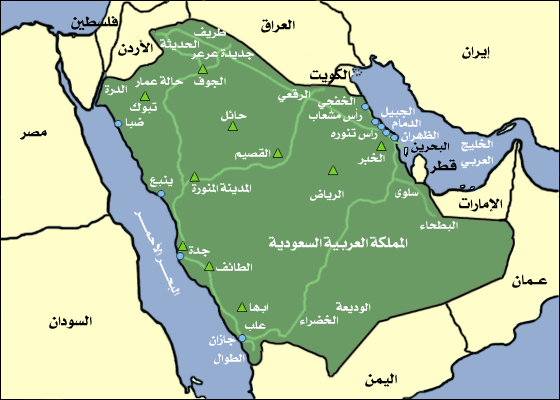
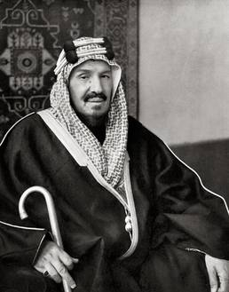
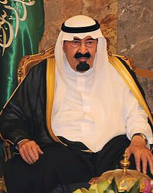
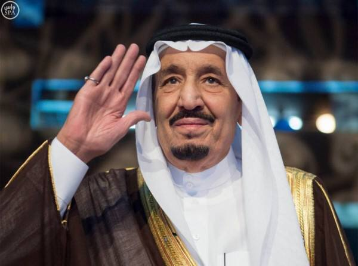

المملكة العربية السعودية
خريطة المملكة العربية السعودية

بدأ تاريخ المملكة العربية السعودية أو ما يعرف بالدولة السعودية الثالثة عندما استرد الملك
عبدالعزيز آل سعود الرياض وعمل على توحيد البلاد وتأسيس الدولة السعودية للمرة الثالثة ،
وشهدت العقود الأولى من تاريخ المملكة حملات توحيد واستعادة مناطق في شبه الجزيرة
العربية، وتحقيق الاستقرار، وتوطين قبائلها، وتحقيق المنجزات الحضارية ، وبعد انتهاء توحيد
البلاد صدر إعلان اسم المملكة العربية السعودية في عام ١٣٥١هـ/١٩٣٢م وأصبح تاريخ هذا
الإعلان في ٢٣ سبتمبر يوماً وطنياً للمملكة ، بعد توحيدها، اعتمدت تسمية المملكة العربية السعودية
في 23 سبتمبر عام 1351هـ/ 1932م، وأعلنت كدولة إسلامية لغتها الوطنية
هي اللغة العربية، ودستورها القرآن الكريم.
تحتفل المملكة العربية السعودية بخمس مناسبات رسمية سنوية، تشمل أعياد المسلمين :
وبالإضافة إلى الأعياد الوطنية :
- اليوم الوطني الموافق ليوم 23 سبتمبر .
- يوم التأسيس الموافق ليوم 22 فبراير .
- و يوم العلم الموافق ليوم 11 مارس .
تسارعت خطى المملكة في صناعة الاقتصاد، وعزز ذلك ظهور النفط واستخراج المعادن،
وتضاعفت العلاقات التجارية مع الدول العالمية، وانتشار حركة التجارة الداخلية، إضافة إلى
استقطاب التقنيات العالمية والاستفادة منها داخل المملكة ، وحققت المملكة معادلة متوازنة بين
الأصالة والمعاصرة، من خلال رؤية واضحة للتطور والنماء، مما أنتج مجموعة من
الحواضر الحديثة، والمنجزات التنموية المتنوعة.
يظهر المزيج بين القديم والجديد والحداثة والتقاليد بشكل واضح في جميع أنحاء المملكة
وكذلك فوائد الاستثمار الضخم في الأفراد والبنية التحتية والبيئة.
حققت المملكة توازناً بين الأصالة والمعاصرة، وحمت مدنها وقراها من التصحر،
واستحدثت مجموعة من المدن العالمية مع الحفاظ على طابعها التاريخي.
خلال عقود قليلة، حولت المملكة نفسها من دولة صحراوية إلى دولة حديثة
متطورة ولاعب رئيسي على المسرح الدولي.
تجسد اليوم الديناميكية المستمرة لشعب وقيادة المملكة أحد أكثر برامج التحول الوطني
طموحاً في العالم؛ وهي رؤية 2030.
ملوك المملكة العربية السعودية
- الملك عبدالعزيز بن عبدالرحمن آل سعود

- فترة الحكم : ١٣١٩ / ١٣٧٣ هـ
- من أقواله :
"أنا أدعو لدين الإسلام ، ولنشره بين الأقوام ، و أنا داعية لعقيدة السلف الصالح و عقيدة السلف
الصالح هي التمسك بكتاب الله ، و سنة رسوله صلى االله عليه وسلم ".
- الملك سعود بن عبدالعزيز آل سعود
- فترة الحكم : ١٣٧٣ / ١٣٨٤ هـ
- من أقواله :
"جاء الإسلام فنقلنا من الضعة و المهانة إلى أعلى الدرجات فكنا أمنع الناس جانبا ،
و كنا القادة ، و كنا الهداة الداعين إلى الله" .
- الملك فيصل بن عبدالعزيز آل سعود
- فترة الحكم : ١٣٨٤ / ١٣٩٥ هـ
- من أقواله :
"يجب على المسلمين عامة و على العرب بصفة خاصة أن يتصلوا ببعضهم ، و أن يتفاهموا
و أن يعتصموا بحبل الله".
- الملك خالد بن عبدالعزيز آل سعود
- فترة الحكم : ١٣٩٥ / ١٤٠٢ هـ
- من أقواله :
"إن المملكة العربية السعودية لفخورة جدا أن تضع كل إمكاناتها ، و تجند كل طاقاتها من أجل
خدمة حجاج بيت الله الحرام ، الذين يحلون في بلادهم و بين اشقائهم و إخوانهم" .
- الملك فهد بن عبدالعزيز آل سعود
- فترة الحكم : ١٤٠٢ / ١٤٢٦ هـ
- من أقواله :
"المملكة العربية السعودية هي واحدة من دول أمة الإسلام هي منهم و لهم ، نشأت أساسا لحمل
لواء الدعوة إلى الله ، ثم شرفها الله بخدمة بيته و حرم نبيه فزاد بذلك حجم مسئوليتها ، و تميزت
سياستها وتزايدت واجباتها ، و هي إذ تنفذ تلك الواجبات على الصعيد الدولي تتمثل ما أمر الله به".
- الملك عبدالله بن عبدالعزيز آل سعود

- فترة الحكم : ١٤٢٦ / ١٤٣٦ هـ
- من أقواله :
“أعاهد الله ثم أعاهدكم أن أتّخذ القرآن دستوراً والإسلام منهجاً وأن يكون شغلي الشاغل إحقاق
الحق وإرساء العدل وخدمة المواطنين” .
- الملك سلمان بن عبدالعزيز آل سعود

- بداية الحكم : ١٤٣٦ هـ
- من أقواله :
"المملكة العربية السعودية ماضية نحو تحقيق كل ما يعزز رخاء المواطن وازدهار الوطن
وتقدمه وأمنه واستقراره، والتيسير على المواطن لتحقيق مختلف
المتطلبات التي تكفل به حياة كريمة بإذن الله".